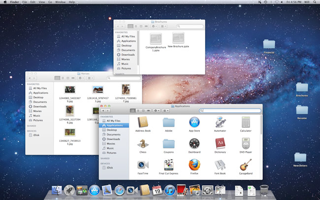

Apple MacOS

Apple's macOS, successor to the popular OS X operating system, runs on Apple laptops and desktops.
Based in part on the historic family of Unix operating systems dating back to research in the 1960s at AT&T's Bell Labs, macOS shares some features with other Unix-related operating systems including Linux.
While the graphical interfaces are different, many of the underlying programming interfaces and command line features are the same.
Signature elements of macOS include the dock used to find programs and frequently used files, unique keyboard keys including the Command key, and the stoplight-colored buttons used to resize open program windows.
MacOS is known for its user-friendly features, which include Siri, a natural-voice personal assistant, and FaceTime, Apple's video-calling application.
- Microsoft Windows
- Apple iOS
- Google's Android OS
- Main page
- Linux Operating System